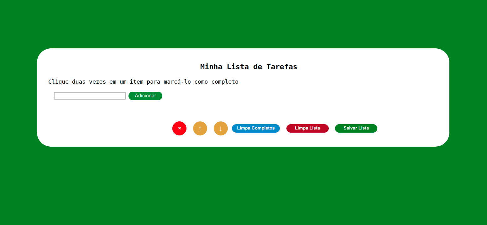
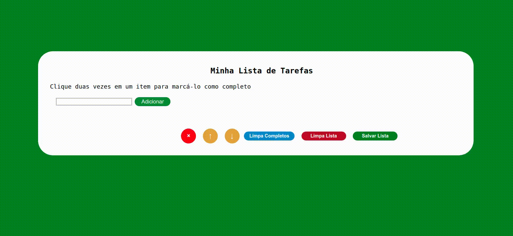

To Do List
Descrição do Projeto
O To Do List é um projeto realizado no decorrer do curso da Trybe, onde a aplicação tem o objetivo de organizar sua lista de tarefas, podendo adicionar, realocar, deletar, marcar as tarefas concluídas e salvar o progresso no localstorage.
No pojeto To Do List pude aprimorar meus conhecimentos no front-end utilizando HTML5, CSS3 e JavaScript.
← Voltar ao portifolio